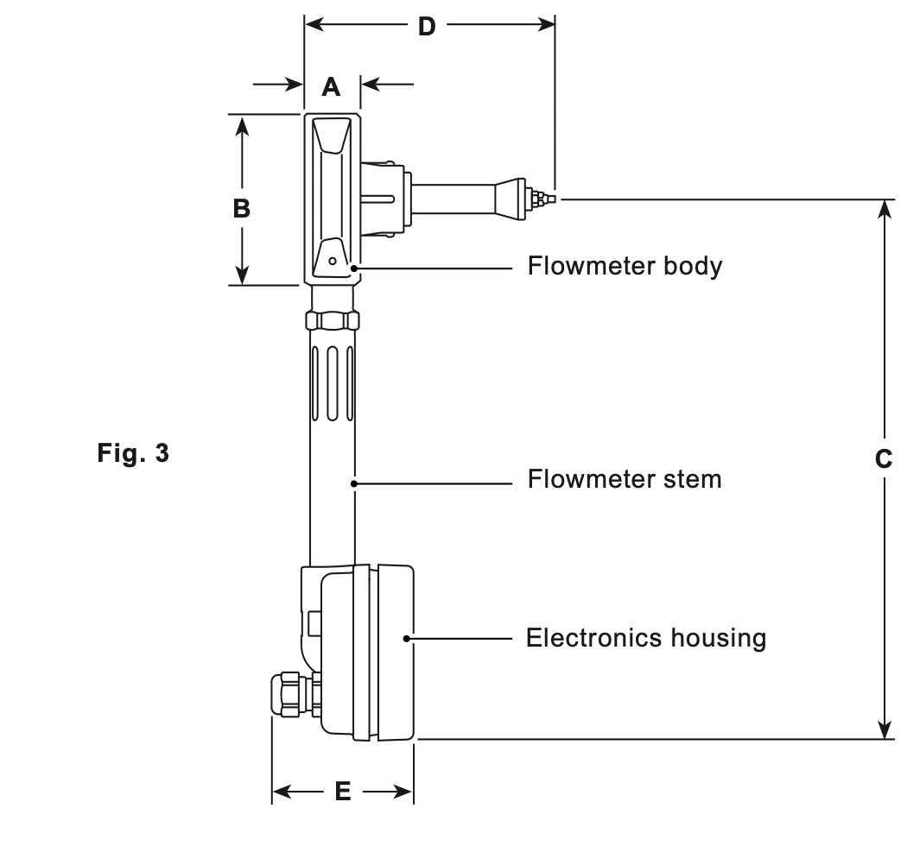
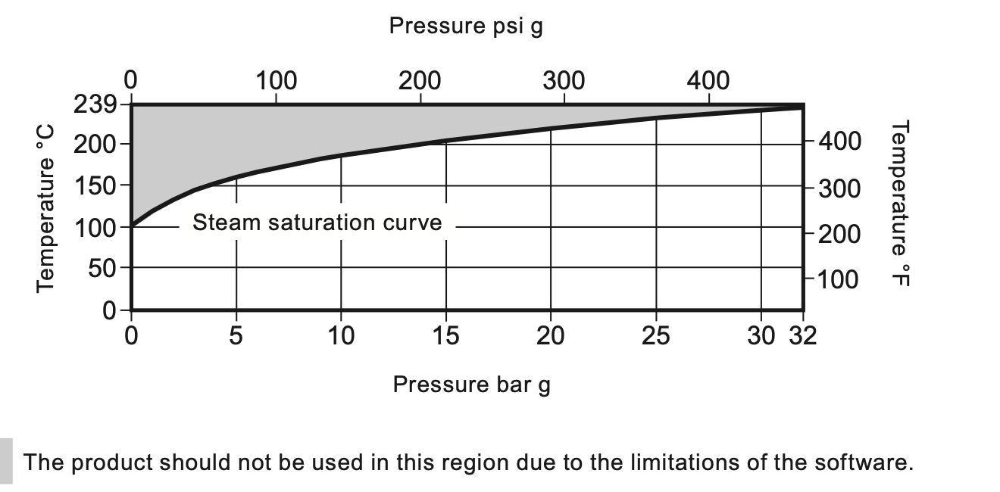
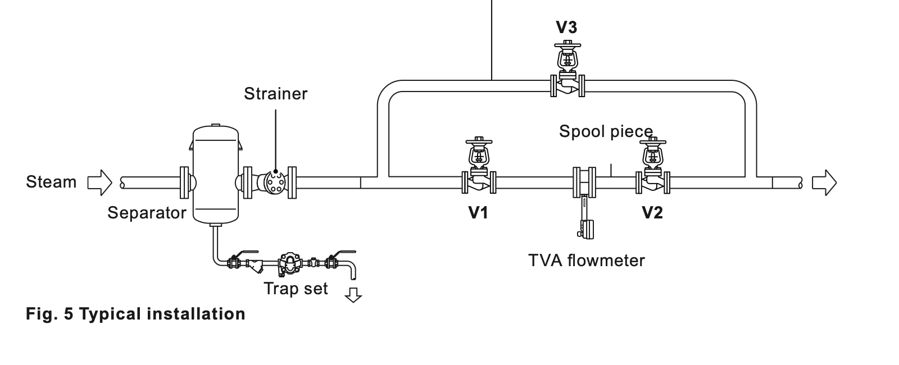
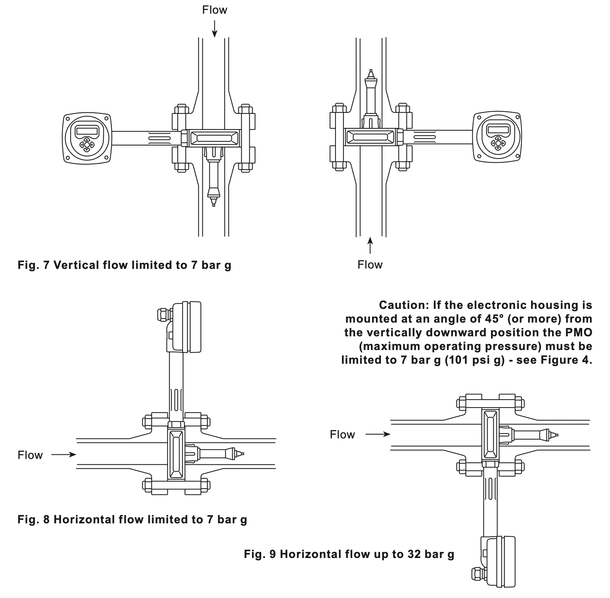
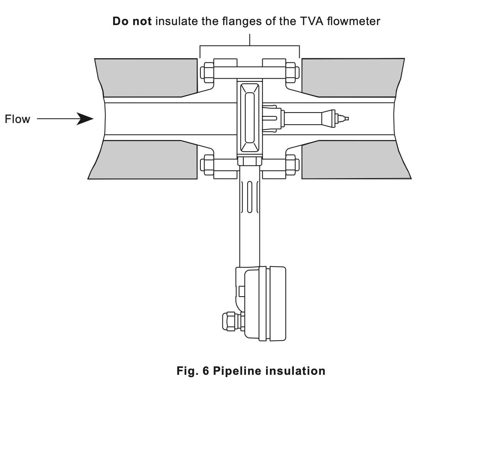
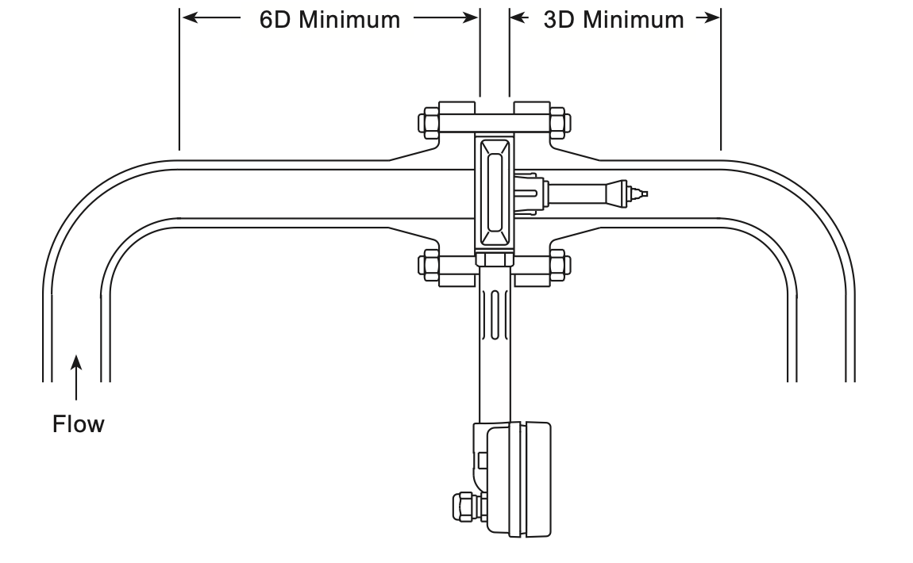
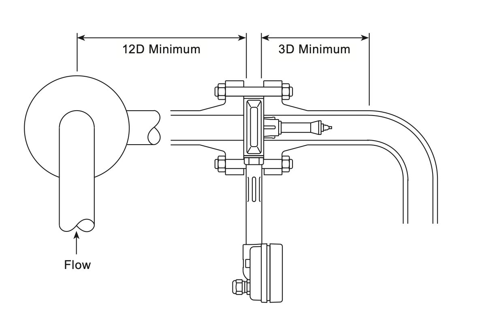
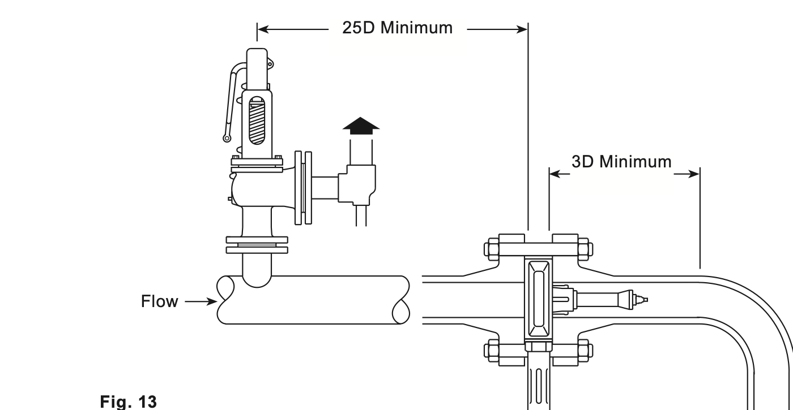
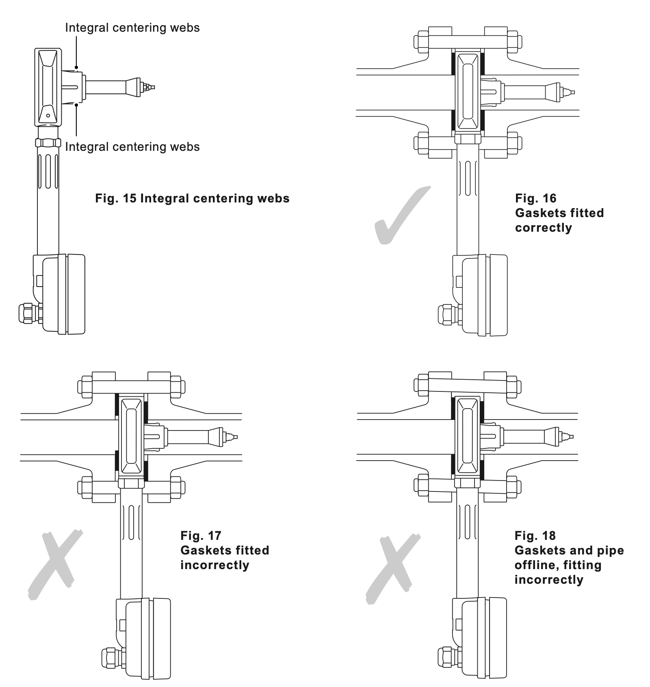
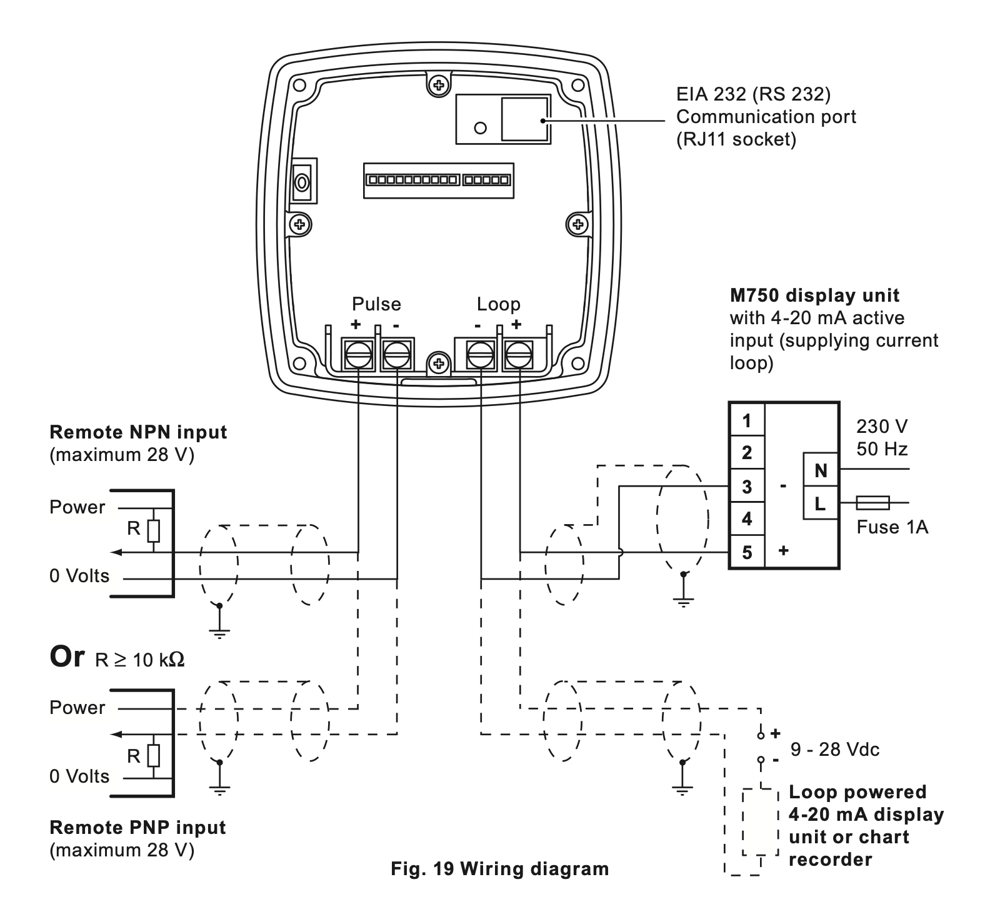

IM-P337-51
EMM Issue 6
2024
TVA 饱和蒸汽流量计产品参数与安装要点
面向产品选型与安装准备的精简介绍

1. 产品概述
Spirax Sarco TVA 流量计用于测量饱和蒸汽的质量流量并累计总流量。仪表采用一体化设计，无需另外配置差压变送器或压力传感器即可计算饱和蒸汽质量流量。
主要特点
- 采用活动锥体受力测量原理，并对质量流量进行密度补偿。
- 提供瞬时流量、累计流量、功率、压力和温度显示。
- 环路供电，提供 4–20 mA 质量流量输出和脉冲输出。
- 量程比最高可达 50:1。
- 支持 EIA 232C 通信、ASCII 协议及 Modbus/RTU 子集。
口径与管道连接
说明书列出的公称口径为 DN50、DN80、DN100、DN150 和 DN200，采用对夹式结构，可安装在以下法兰之间：
- EN 1092 PN16、PN25 和 PN40
- BS 10 Table H
- ASME B16.5 Class 150 和 Class 300
规格核对：Issue 6 的尺寸、重量和部分压降数据只列出了 DN50、DN80、DN100。DN150、DN200 的详细尺寸与选型数据应在发布前通过对应技术数据表确认，不应由本页推算。
2. 技术参数
| 适用介质 | 饱和蒸汽 |
|---|---|
| 防护等级 | 正确安装电缆密封套时为 IP65 |
| 电源 | 环路供电，标称 24 VDC；允许工作范围 9–28 VDC |
| 模拟输出 | 4–20 mA，与质量流量成比例 |
| 脉冲输出 | Vmax 28 VDC；Rmin 10 kΩ；Von 最大 0.7 V |
| 通信端口 | EIA 232C，连接距离最大 15 m |
| 系统不确定度 | 最大额定流量的 10%–100% 范围内为读数的 ±2%；2%–10% 范围内为 ±0.2% FSD |
| 量程比 | 最高 50:1 |
| 电气接口 | M20 × 1.5 |
| 电子单元环境温度 | 最高 55°C |
| 电子单元环境湿度 | 最高 90% RH，无冷凝 |
3. 压力与温度限制

| 最大允许压力 PMA | 饱和蒸汽在 239°C 时为 32 bar g；其他情况受法兰额定值限制 |
|---|---|
| 最大允许温度 TMA | 239°C |
| 最低允许温度 | 0°C，不得结冰 |
| 水平流动最大工作压力 PMO | 32 bar g |
| 垂直流动最大工作压力 PMO | 7 bar g |
| 最低工作压力 | 0.6 bar g |
| 最高工作温度 TMO | 239°C |
| 冷态水压试验压力 | 52 bar g |
最大额定流量下的名义压降
| 口径 | 名义压降 |
|---|---|
| DN50 | 750 mbar（300 in wg） |
| DN80、DN100 | 500 mbar（200 in wg） |
4. 材料与尺寸
主要材料
| 部件 | 材料 |
|---|---|
| 流量计本体 | 不锈钢 1.4408 CF8M |
| 内部零件 | 431 S29 / S303 / S304 / S316 |
| 弹簧 | Inconel X750 或同等材料 |
| 流量计杆 | 不锈钢 431 S29 |
| 电子单元外壳 | 铝合金 LM25 |
外形尺寸与重量
| 口径 | A | B | C | D | E | 重量 |
|---|---|---|---|---|---|---|
| DN50 | 35 mm | 103 mm | 322 mm | 160 mm | 65 mm | 2.67 kg |
| DN80 | 45 mm | 138 mm | 334 mm | 160 mm | 65 mm | 4.38 kg |
| DN100 | 60 mm | 162 mm | 344 mm | 215 mm | 65 mm | 7.28 kg |
5. 安装要点
安全提示：TVA 仅用于饱和蒸汽。安装、调试和维护必须由具备资质的人员按照完整说明书及现场适用规范执行。以下内容用于产品选型和安装准备，不能替代 IM-P337-51 EMM Issue 6 完整安装维护说明。
典型系统布置
蒸汽系统应遵循良好的蒸汽工程实践。典型布置包括汽水分离器、过滤器、疏水阀组、隔离阀和旁通管路；旁通管路便于在维护、校准或重新调零时隔离流量计。

安装方向与压力限制
- 压力低于或等于 7 bar g 时，可按说明书允许的方向安装。
- 压力高于 7 bar g 时，必须安装在水平管道上，并使电子单元位于流量计本体下方。
- 电子单元相对垂直向下位置偏转达到或超过 45°时，最大工作压力必须限制为 7 bar g。
- 仪表只允许单向流动，应按本体上的流向箭头安装，不适用于双向流。

环境与保温
- 安装位置应尽量减少热量、振动、冲击和电气干扰。
- 应为布线、拆卸电子外壳端盖和观察显示屏留出足够空间。
- 不得对 TVA 流量计本体或相邻法兰进行保温，否则可能导致电子单元过热、性能下降或损坏。
- 不得安装在可能遭受强风雨或结冰的室外环境。

前后直管段
直管段长度以管道内径 D 为单位。管道内壁应平滑，优先使用无缝管，并避免侵入内径的焊缝。



对中与垫片
流量计必须与管道中心同轴。推荐使用内径与管道相同的螺栓环垫片，避免垫片伸入管道造成测量误差；仪表自带对中凸耳，用于配合管道内径定位。

6. 电气连接
- 仪表采用环路供电，标称电源为 24 VDC；实际允许范围为 9–28 VDC，并受总回路电阻影响。
- 4–20 mA 回路和脉冲输出建议使用屏蔽双绞线，每芯截面积 0.5 mm²。
- 一般情况下，仪表与电源之间的最大电缆长度为 300 m；实际长度取决于网络设备数量、总电阻和电缆电容。
- 推荐使用适用于 M20 × 1.5、符合 EN 50262 / IP68 的电缆密封套。
- 流量计必须可靠接地；接地导线截面积至少为 1.5 mm²，并应确保低电阻连接。
调试后：完成调试后应从电子外壳内取出硅胶干燥剂，并确认密封和接地符合现场规范。

7. 调试与通信概要
调试功能
- 出厂默认使用公制单位。
- 显示屏可查看累计流量、瞬时流量、功率、压力和温度。
- 可设置蒸汽干度、单位、安装方向、大气压力补偿、4–20 mA 量程、脉冲输出和报警动作。
- 仪表应在管线上、确认无流量的条件下完成调零；具体温度条件和操作步骤必须遵循完整说明书。
- 调试完成后，应测试报警和相关保护装置是否正常工作。
通信能力
| 物理接口 | EIA 232C（RJ11） |
|---|---|
| 协议 | ASCII；Modbus/RTU 子集 |
| 波特率 | 1200 或 9600 |
| 连接距离 | 最大 15 m，且应位于同一建筑或区域 |
| Modbus 功能 | 支持读取保持寄存器，功能码 03 |
产品详情不展开 ASCII 指令、Modbus 报文结构、寄存器地址和报警位字段；系统集成时应以完整说明书第 4.11–4.13 节为准。
8. 运行与维护
工作原理
TVA 通过检测瞬时流量作用在活动锥体上的应变，将信号转换为经过密度补偿的质量流量，并通过单回路供电的 4–20 mA 输出和脉冲输出传送。该结构可满足过程应用所需的高量程比和测量精度。
维护周期
- 至少每年使用调零菜单对仪表进行一次调零，以补偿电子单元的长期漂移。
- 重新校准周期取决于工况和应用，典型周期为 2–5 年。
- 更换显示及电子单元时应切断电源，并执行静电放电防护程序。
- 订购替换显示及电子组件时必须提供流量计序列号。
完整资料：故障诊断、电子组件更换步骤、菜单操作、报警信息、通信寄存器和设置记录表未在本产品介绍中展开。安装、调试或检修前，请查阅 Spirax Sarco《TVA Flowmeter for Saturated Steam Service — Installation and Maintenance Instructions》，文档编号 IM-P337-51，EMM Issue 6。